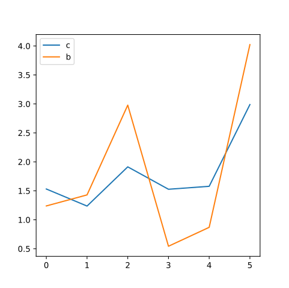

线性分类¶
摘要
本节介绍如何使用顺序模型(sequential model)来编写一个线性分类器，使用sigmoid函数激活，并验证其效果。在本节我们将编写第一个Project，并介绍一些基本概念、和一个推荐的Tensorflow Project的编写格式。
理论¶
问题描述¶
考虑我们有如下的二分类数据集(\mathbf{x},~y_i) \in \mathbb{D}_i，并且有一个未知的常数向量\mathbf{a}_i和未知的常数标量c_i，使得：
其中，\mathbf{a}可以看成是某超平面的（未标准化的）法向量，那么\mathbf{a}^T \mathbf{x} + c = 0是该超平面的截距式定义，亦即该平面与x_i轴的交点可以显式表述为x_i^{(0)} = - \frac{c}{a_i}。由此可知，式(1)显式定义了一个点在超平面的哪一侧。特别地，若\mathbf{x}是一个二维向量，则该超平面退化为一维平面；若\mathbf{x}是一个标量，则该超平面退化为一条直线。
若我们定义(\mathbf{x},~\mathbf{y}) \in \mathbb{D}，有
则我们可以认为
其中\boldsymbol{\varepsilon}是一个定义噪声的向量。
我们可以把向量\mathbf{y}的元素看成是互不相关的多个超平面对向量\mathbf{x}各自独立的分类结果。即y_i = \{ \hat{y}_i>0 ~ | ~ \hat{y}_i = \mathbf{a}_i^T \mathbf{x} + c_i + \varepsilon_i \}。由于每个超平面构成一个二分类，如果把每个二分类看作是向量是否属于这个类的测度，那么\mathbf{y}可以被看作是一个多分类的结果，尽管向量\mathbf{x}可能被同时分入多个类中。
假设我们的数据集(\mathbf{x},~\mathbf{y}) \in \mathbb{D}符合(3)定义的数据分布特征。我们的基本要求是，在我们不知道\mathbf{A},~\mathbf{c}的情况下，使用大量(\mathbf{x}^{(k)},~\mathbf{y}^{(k)}) \in \mathbb{D}样本训练一个线性分类器，使得当我们给定任意一个新样本\mathbf{x}的时候，分类器能推断出其对应的\mathbf{y}来（亦即是否属于该分类）。
须知
请注意我们在这里说到“线性分类器”，虽然使用“线性”一词，但准确来说，这是一个仿射变换。因为线性变换要求有齐次性，即f(x) = \alpha f(x)，但仿射变换允许我们引入一个平移向量\mathbf{b}。当然，我们的求解的线性问题本身也是一个仿射变换。
在这个问题里，我们虽然不知道\mathbf{A},~\mathbf{c}，但我们知道由(3)确定的线性关系，因此，我们可以随机生成一组\mathbf{W},~\mathbf{b}，构建线性模型：
其中，可微函数\sigma是一个将实数空间\mathbb{R}^n映射到有限范围的实数空间[0,~1]^n内的函数。特别地，\sigma(-\infty)=0,~\sigma(0)=0.5,~\sigma(+\infty)=1。因此，可以将\sigma看作是二分类布尔函数的插值函数。理论上，只要我们找到\mathbf{W}=\mathbf{A}，\mathbf{b}=\mathbf{c}，则该线性分类器可以直接拟合出原分布来。
感知机¶
我们将(4)定义的线性模型称为单层感知机 (Single-layer perceptron)模型。它包含一个权重矩阵\mathbf{W}和一个偏置矩阵\mathbf{b}。事实上，可以将(4)改写成如下形式
可见偏置本身可以看成是输入向量多了一个常数元素的等价模型。
感知机是最早的神经网络形式，它非常孱弱，只能解线性问题，但却为神经网络后来的发展开了先河。在单层感知机里，我们视输入向量\mathbf{x}的每个元素为一个“神经元”，矩阵\mathbf{W}和偏置\mathbf{b}将我们的输入映射到输出层\mathbf{y}，输出层的每个元素也视为一个神经元。在这个过程中，W_{ij}作为i行j列的元素，代表了连接两个神经元的权重。我们用红线代表正值，蓝线代表负值，感知机可以被图示为
线性感知机的输出也是输入的线性组合，但我们可以添加激活函数，即\sigma(\cdot)将其映射到非线性空间。这要求我们添加的激活函数是一个非线性函数。
事实上，将单层感知机层叠，前一层的输出作为后一层的输入，就构建出早期的神经网络。这种网络每一层都是全连接的（两个神经元之间总是有权重，尽管值可能为0），每一层都有激活函数。理论上，任意一个两层堆叠的感知机，只要神经元数目足够多，就可以拟合出任意一个非线性函数。然而，实际测试中，这一理论的效果并不尽如人意，因此又有陆续地改进，才有了后来的深度学习。饮水思源，鉴往知来，我们也将从这个简简单单的单层模型开始，走上学习“深度学习”之旅。
Sigmoid函数¶
在上述介绍中，我们没有解决的两个问题是，
- 如何定义插值函数\sigma？
- 如何找到合适的\mathbf{W},~\mathbf{b}？
我们首先讨论第一个问题。一般地，多分类问题中，如果各个分类彼此并非相斥，且不一定要将结果分入任一类的话，我们可以用Sigmoid函数来定义\sigma，亦即
它同时满足\sigma(-\infty)=0,~\sigma(0)=0.5,~\sigma(+\infty)=1，且是一个单调函数。以下代码向我们展示了这种函数的特性：
1 2 3 4 5 6 7 8 9 10 11 12 | import numpy as np import matplotlib.pyplot as plt def test_sigmoid(): x = np.linspace(-5,5,100) y = 1 / ( 1 + np.exp(-x) ) plt.plot(x,y) plt.xlabel('x'), plt.ylabel('y') plt.gcf().set_size_inches(5, 5), plt.show() if __name__ == '__main__': test_sigmoid() |
使用sigmoid函数的一大好处是，它的导数求解非常简单，很适合用来做神经网络这样一个复杂模型的激活函数。注意虽然\sigma(\mathbf{x})和\mathbf{x}都是向量，这意味着导数是Jacobian矩阵，但由于\sigma是一个对\mathbf{x}各元素独立的解析函数，这个Jacobian矩阵实际上是一个对角矩阵，对角线上第j个元素的值为
可见，该函数的导数和计算函数本身的复杂度相若，可以做到快速求导。
求解问题¶
接下来，我们需要解决第二个问题，亦即找到\mathbf{W},~\mathbf{b}。这一问题通常可以写成反问题的形式：
最简单的情况下，我们可以把损失函数(loss function)定义为
我们称(8)为逻辑斯蒂回归(logistic regression)。有趣的是，虽然这个术语叫“回归”，但它解的其实是个分类问题。但是，既然这是一个分类问题，我们可以不使用这个损失函数，而是从概率论的角度看待这个问题。由此，我们引出一个新的损失函数：“交叉熵”。
交叉熵¶
我们视sigmoid函数输出的值为一个概率，表示分类器对预测结果的确信程度，记\mathbf{W},~\mathbf{b} \in \boldsymbol{\Theta}，则
注意这里的概率向量的含义是，其中第i个元素表明第i个超平面分类结果的确信程度。
然而，这个概率只是分类器对分类结果的确信程度，却并非是分类准确度的概率，实际上，分类准确度的概率，应当表述为
注意
这里\mathbf{x}^{\mathbf{y}}表示的是对每个元素一一求取指数，即函数第i个元素的返回值应当为{x_i}^{y_i}。
我们使用真实值\mathbf{y}作为指数给概率向量加权。当\mathbf{y}=1时，乘积项的第二个因子消去，该函数退化为以预测值为1的可信度\mathbf{p}(y_i=1|\mathbf{x};~\boldsymbol{\Theta})；反之则第一个因子消去，退化为以预测值为0的可信度\mathbf{p}(y_i=0|\mathbf{x};~\boldsymbol{\Theta})。这就是最大似然估计方法。至此，我们可以写出似然估计函数
对似然估计函数取对数，则有
我们最终的目的是要最大化似然函数，亦即\mathbf{W},~\mathbf{b} = \arg\max\limits_{\boldsymbol{\Theta}} l(\boldsymbol{\Theta})，这等价于最小化-l(\boldsymbol{\Theta})。对比(8)和(9)，于是我们可以定义交叉熵为
注意这里我们使用\mathrm{mean}\left[ \cdot \right]表示求取一个向量所有元素的平均值。实际上，Tensorflow允许我们定义损失函数的输出为一个和输出向量维度相同的向量，Tensorflow自带的交叉熵也是这样定义的。实际应用时，Tensorflow会自动在向量维度上求均值，并压缩成上述(14)的形式。
若我们记\tilde{\mathbf{y}} = \sigma(\tilde{\mathbf{x}})，代入sigmoid函数，为了确保该损失函数的稳定性，我们可以将(14)整理为
提示
这里交叉熵整理的推导过程参见Tensorflow-API官方文档。
实际情况下，我们使用(15)来求取sigmoid函数激活下的交叉熵。
解线性多分类问题¶
接下来，我们将开始实战上手，编写我们的第一个Project。虽然一个Project的格式并无定法，每个人按照自己的喜好会选择不同的风格，但一个从无受过训练的人，往往写出的Project几乎完全不具有可读性。实际上，学习任何语言，变量命名规范、缩进规范以及模块化、面向对象等都被认为是编写一个具有可读性的代码所不得不知的概念。本教程所推荐的代码格式，均具有统一的风格，读者在了解每个Project和其对应的教程时，会慢慢熟悉这种风格的特点。愿读者能从这样的风格中得到启发，得到代码可读性的神髓。
代码规范¶
建立一个具有较强可读性的Tensorflow工程需要我们活用python的模块化设计。我们通常推荐以下的结构
. ├─ data/ # where we store our data │ └─ ... ├─ tools.py # codes for post-processing and analyzing records. ├─ extension.py # codes for extending the tensorflow model. ├─ dparser.py # data parser └─ main.py # main module where we define our tensorflow model.
除了保存数据的文件夹，我们应当有三个子模块。其中
tool: 用来处理、分析生成的数据，通常与Tensorflow无关；extension: 用来扩展tensorflow，例如在这里自定义网络层和操作符；dparser: 数据处理器，用来读取并预处理送入网络的数据；main: 主模块，只定义跟Tensorflow模型有关的内容，需要引用extension和dparser。
视情况可以灵活调整结构，但建议将定义Tensorflow模型的代码单独放在主模块里，和其他外围代码分离。
撰写各个模块时，建议使用类封装各组功能相同的函数。具有良好使用习惯的coder应当注意给各个面向用户的类、函数撰写（哪怕简短的）说明文字，在一些较长的函数、方法的定义中，适当注释各部分的功能，以便读者能正确理解代码意义。
另外，在对象命名上，python有如下必须遵守或不成文的规定，和C/C++用户熟悉的蛇形命名法不同，它大致包括
- 类与函数多用驼峰命名法，变量可以采用驼峰或蛇形命名法。
- 驼峰命名法指的是用大小写区分每个单词块，例如
alphaBetaFunction()； - 蛇形命名法指的是用下划线区分每个单词块，例如
alpha_beta_function = 10；
- 驼峰命名法指的是用大小写区分每个单词块，例如
- 宏变量使用全字大写+蛇形命名法
- 函数/方法，还有模块均是首字母小写，但类的首字母大写。
- 用单下划线
_表示临时存储器，或省略参数，例如一个函数func()有两个返回值时，可以用_, b = func()表示我们只需要第二个返回值；单下划线还可以与星号连用省略多个返回值； - 以单下划线开头的方法，表示模块级的私有方法，在模块以外使用
import导入类时，不会导入这些方法，例如def _alphaBeta(self):； - 以单下划线结尾的对象，用来和python的关键字区分，例如
func(x, class_); - 以双下划线开头的方法，如果不以双下划线结尾，则表示类级的私有方法，只有类内部的方法能调用这些方法，在类外部、包括继承的子类里都原则上不能调用（但其实也有办法调用），例如
def _alphaBeta(self):； - 以双下划线同时开头和结尾的方法，一般是用来重写 (override)特殊功能，例如
def __getattribute__():将重写获得类属性的方法。
Tensorflow的数据概念¶
在Tensorflow中，我们把变量都称为“张量 (Tensor)”。这是因为我们有零维的标量，一维的向量，二维的矩阵，更高维的我们都称为张量。作为一个更大的概念，张量当然也可以用来包括标量、向量和矩阵了。在Tensorflow中，有的张量是可以训练 (trainable)的，有的则不是。比如一个张量的形状（指各维大小），当然可以是一个<tf.Tensor 'Shape:0' shape=(1,) dtype=int32>类型的张量，但它不是变量，当然就不可训练。我们也可以人为控制某些张量可以训练或不可以训练，但本节、乃至本章所介绍的凡是我们接触到的张量，都是可以训练的。
特别地，对于神经网络而言，在网络内计算（或者说流动、传播）的一个n维数据，通常按照以下形式组织：
tensor[batch, dim1, dim2, ..., dimn, channel]
- 其中，第一个维度
batch一定存在，它表示的是单个batch中的某一个样本。如果一个batch只有一个样本，那么batch只能取0。 - 从
dim1到dimn指的是实际的n维数据的各个维度； channel指的是数据的通道，例如，一个二维RGB图像，每种颜色代表一个通道，因此有三个通道。channel通常用在卷积网络里，我们经常需要在深度卷积网络里不断增大通道数的同时，缩小数据尺寸。- 在某些特殊情况下，
channel维度可以不存在，例如我们使用的是全连接层而不是卷积网络，tf.keras.layer.Flatten可以用来将一个有通道的张量压缩成一个没有通道的一维向量（但是注意batch维度仍然存在，不会被压缩）。
因此，我们知道一个n维的数据，在神经网络中通常被描述为一个n+2维的矩阵，而一个一维向量，在卷积网络里是三维的：
vector[batch, length, channel]
但是在全连接网络里，是二维的：
vector[batch, channel]
在本节，乃至本章里，我们还不讨论卷积网络，因此我们都是使用二维张量（一维向量组）作为我们的数据。
数据生成¶
在本项目里，我们不需要扩展Tensorflow。但是，我们需要以随机生成数据代替数据集。因此，首先，通过以下代码定义数据生成器
1 2 3 4 5 6 7 8 9 10 11 12 13 14 15 16 17 18 19 20 21 22 23 24 25 26 27 28 29 30 31 32 33 34 35 36 37 38 39 40 41 42 43 44 45 46 47 48 49 50 51 52 53 54 | class TestDataSet: ''' A generator of the data set for testing the linear model. ''' def __init__(self, scale_x, A, c): ''' Initialize the data generator. scale_x: the scale of input vector. A, c: the linear transformation. ''' self.s_x = 2 * scale_x self.A = A self.c = c self.len_x = A.shape[0] self.config() def config(self, train=True, batch=100, noise=0.1): ''' Configuration train: a flag for controlling the iterator mode. batch: the number of samples in a batch noise: std. of the error added to the y. ''' self.train = bool(train) self.batch = batch self.noise = noise def next_train(self): ''' Get the next train batch: (x, y) ''' x = self.s_x * (np.random.random([self.batch, self.len_x]) - 0.5) y = np.matmul(x, self.A) + self.c if self.noise > 1e-3: y = y + np.random.normal(0, self.noise, size=y.shape) y = np.greater(y, 0.0).astype(np.float32) return x, y def next_test(self): ''' Get the next test batch x. ''' return self.s_x * (np.random.random([self.batch, self.len_x]) - 0.5) def __iter__(self): while True: samp = self.__next__() yield samp def __next__(self): if self.train: return self.next_train() else: return self.next_test() |
该生成器输入一组\mathbf{A},~\mathbf{c}，以及相关配置，之后就可以通过迭代器 (iterator)或方法 (method)随机生成数据。这种数据集写法我们在后面还会用到，model.fit允许我们不是馈入样本（或样本批次），而是馈入一个生成器(generator)。因此我们重写了__iter__方法，并使其通过yield返回一个生成器。这样我们定义的数据集类就可以被Keras的训练函数model.fit使用。接下来，调用如下测试代码：
1 2 3 4 5 6 7 8 9 10 | def test_dataset(): A = np.random.normal(0, 10, [10,6]) c = np.random.uniform(1, 3, [1,6]) dataSet = TestDataSet(10, A, c) dIter = iter(dataSet) for i in range(10): x, y = next(dIter) print(np.sum(y,axis=0)/100) test_dataset() |
[0.47 0.57 0.58 0.56 0.5 0.38] [0.6 0.61 0.47 0.48 0.38 0.52] [0.5 0.61 0.49 0.42 0.45 0.53] [0.59 0.52 0.44 0.44 0.49 0.51] [0.54 0.59 0.48 0.5 0.51 0.47] [0.49 0.57 0.56 0.49 0.53 0.4 ] [0.5 0.61 0.51 0.54 0.51 0.52] [0.5 0.51 0.61 0.5 0.44 0.5 ] [0.44 0.46 0.53 0.45 0.56 0.52] [0.52 0.46 0.51 0.52 0.49 0.44]
我们随机生成了\mathbf{x} \mapsto \mathbf{y}:~\mathbb{R}^{10} \mapsto \mathbb{R}^6的数据，每组数据100个，并且测试了10组。输出结果是各组测试中，\mathbf{y}在对应维度上分类为1的概率估计。结果基本都在0.5左右，说明我们的这种数据生成模式产生的点能均匀分布在各个超平面两侧，适合进行后续测试。
定义线性顺序模型¶
顺序 (sequential)模型是一个单输入单输出模型，网络结构较为简单，也不存在跨层短接（残差连接）。在大多数情况下，已经上手的Tensorflow用户不使用这个模型，故而作为我们入门的第一个project，我们姑且用之，但我们将不再使用顺序模型来实现后续的project。一个顺序模型大致可以描述为下图的模式：
由于我们完成的是一个线性分类器，故而我们使用单层的序列模型即可。
接下来，我们来定义一个类，class LinClsHandle:。定义一个类的时候，我们通常需要定义的内容包括
- 在初始化方法
__init__里定义传入网络的固定参数，例如学习速率，存取路径等； - 在方法
construct里定义网络的构造和使用的优化器； - 在方法
train里定义训练网络的过程，主要需要调用model.fit。如果我们在数据集的定义非常完善，则这一环节不需要花费太多的功夫； - 在方法
test里定义测试网络的过程，主要需要调用model.evaluate。如果有必要，可以通过model.predict返回测试结果。
初始化方法¶
首先，定义初始化方法：
1 2 3 4 5 6 7 8 9 10 | def __init__(self, learning_rate=0.01, epoch=10, steppe=30): ''' Initialization and pass fixed parameters. learning_rate: the learning rate for optimizer. epoch: training epochs. steppe: steps per epoch ''' self.lr = learning_rate self.epoch = epoch self.steppe = steppe |
由于目前我们的project还非常简单，这里只需要有学习速率(learning_rate)，轮次数(epoch)和每轮迭代次数(steppe)即可。
构造方法¶
接下来定义网络构造
1 2 3 4 5 6 7 8 9 10 11 12 13 14 15 16 17 18 19 20 21 22 | def construct(self): ''' Construct a linear model and set the optimizer as Adam ''' # Construction self.model = tf.keras.Sequential() self.dense1 = tf.keras.layers.Dense(LABEL_SHAPE, use_bias=True, input_shape=(INPUT_SHAPE,), kernel_initializer=tf.keras.initializers.RandomNormal(0.0, stddev=10.0), bias_initializer=tf.keras.initializers.Constant(2), activation=tf.nn.sigmoid) self.model.add(self.dense1) # Set optimizer self.model.compile( optimizer=tf.train.AdamOptimizer(self.lr), loss=tf.keras.losses.BinaryCrossentropy(), metrics=[self.accuracy, tf.keras.metrics.BinaryAccuracy()] ) @staticmethod def accuracy(y_true, y_pred): return tf.keras.backend.mean(tf.keras.backend.equal(y_true, tf.keras.backend.round(y_pred))) |
须知
这里LABEL_SHAPE和INPUT_SHAPE为两个宏变量，分别为输出和输入的向量维度。
我们使用Dense定义全连接层，它的用法请参照这里。由于我们已经知道\mathbf{A}和\mathbf{c}可能的取值范围，这里我们重定义了\mathbf{W}和\mathbf{b}的初始化方式。
信息: Dense API
tf.keras.layers.Dense(shape, **kwargs)指全连接层，其输入一组已知形状的向量，输出一组形状为shape的向量。可用的API如下：
shape: 正整数，输出空间维度。activation: 激活函数。 若不指定，则不使用激活函数 (即，线性激活: a(\mathbf{y}) = \mathbf{y})。该函数可以定义为任何元素级操作的Tensorflow函数。use_bias: 布尔值，该层是否使用偏置向量。True则网络定义为\mathbf{y} = \mathbf{W}\mathbf{x} + \mathbf{b}，False则定义为\mathbf{y} = \mathbf{W}\mathbf{x}。kernel_initializer: kernel 权值矩阵的初始化器，自定义的初始化器需要使用Keras后端API编写。bias_initializer: 偏置向量的初始化器，同上。kernel_regularizer: 运用到 kernel 权值矩阵的正则化函数，自定义的正则化函数需要使用Keras后端API编写。bias_regularizer: 运用到偏置向的的正则化函数，同上。activity_regularizer: 运用到层的输出的正则化函数，同上。kernel_constraint: 运用到 kernel 权值矩阵的约束函数，只能使用Keras备选的几种方案，不能自定义。bias_constraint: 运用到偏置向量的约束函数，同上。
信息: model.compile API
model.compile(optimizer, **kwargs)在这里指的是顺序模型的编译函数，其可用的API如下：
optimizer: 优化器，可以使用Tensorflow内置的优化器。loss: 损失函数，也是目标函数。顺序模型只有一个输出，因此只能传入一个损失函数。可以使用形式为func(y_true, y_pred)的Tensorflow函数。metrics: 测度函数，一般是一组函数，如果是一个函数则定义为[func]即可。自定义的测度函数目前还需要使用Keras后端API编写。loss_weights: 损失的权重，顺序模型只有一个损失函数，因此只有一个权重，但要使用一维列表[value]定义。可以使用张量来控制可变权重。sample_weight_mode: 按时间步采样权重，默认不提供。相比上面的损失权重，该选项会随着迭代次数使用不同的权重，因此输入的是二维列表。weighted_metrics: 测度的权重，和损失权重类似，用来加给不同的测度函数。由于我们可以使用不只一个测度函数，这里的权重是个一维列表。target_tensors: 默认情况下，Keras 将为模型的目标创建一个占位符，在训练过程中将使用目标数据。相反，如果你想使用自己的目标张量（反过来说，Keras在训练期间不会载入这些目标张量的外部 Numpy数据），您可以通过target_tensors参数指定它们。对于单输出的顺序模型，它应该是单个张量。**kwargs: 其他参量，会传递给tf.Session.run。
另外，注意我们这里构造网络的时候有如下技巧：
- Tensorflow在导入Keras模式以后，已经不再使用(15)的形式定义sigmoid交叉熵，而是采取更通用的定义(14)；
- 我们使用Tensorflow重新封装过的类，二分类交叉熵 (
BinaryCrossentropy)来作为Keras模型的损失函数self.loss，该函数与多分类交叉熵 (CategoricalCrossentropy)不同，乃是对两组对比张量的每个元素分别计算交叉熵，再求取均值，正符合本应用的需求； - 我们通过静态方法，调用Keras的后端API，自己定义了预测准确度的测度函数
self.accuracy，同时也使用另一个来自Tensorflow封装好的测度类二分类准确度 (BinaryAccuracy)，这是为了比照两个准确度的区别，以便我们更好理解该测度类； - 我们将网络层的关键字
self.dense1保留在了实例中，这是为了确保接下来我们能通过实例抽取该层的参数。
需要注意的是，由于二分类交叉熵，二分类准确度和多分类交叉熵等都是类（从它们的定义都是大写字母开头也可以看出来），因此我们需要在使用的时候后面加上括号以实例化；由于这些类都定义了__call__方法，我们可以像使用函数一样使用它们的实例。
训练和测试方法¶
最后定义的式训练和测试方法。由于我们目前的project还比较简单，关于这两部分都直接调用现有的API即可。使用的API在之前已经说明。model.fit在没有额外设置的情况下，默认会返回一个History回调器；model.evaluate返回的是测试样本给出的损失函数和准确值测度。model.predict返回的是测试样本给出的网络输出。详情请参照顺序模型API。
1 2 3 4 5 6 7 8 9 10 11 12 13 14 | def train(self, dataSet): ''' Use a data set to train the network. ''' return self.model.fit(dataSet, epochs=self.epoch, steps_per_epoch=self.steppe) def test(self, data, labels): ''' Use (data, label) pairs to test the results. ''' loss, accu = self.model.evaluate(data, labels) print('Evaluated loss =', loss) print('Evaluated accuracy =', accu) return self.model.predict(data) |
信息: model.fit API
model.fit(dataSet, **kwargs)是训练函数，注意这个函数虽然支持输入一组x,~y用来代替dataSet，我们还是建议在任何情况下都用dataSet馈送数据，以免内存中数据集占用过多。
dataSet: 数据集，其本身应当是一个tf.data.Dataset类型的类，或者是一个能不断迭代产生新数据的生成器。数据的batch大小由dataSet本身决定。epochs: 整数，终止训练时经历的世代(轮次)数，通常一个epoch表示遍历整个数据集一回。verbose: 0, 1或2。日志显示模式。 0=安静模式, 1=进度条, 2=每轮一行。默认是1。callbacks: 回调器，它是tf.keras.callbacks模块下的类，用来在训练中进行记录保存和数据检查点更新。默认是tf.keras.callbacks.History。validation_split: 在 0 和 1 之间浮动。用作验证集的训练数据的比例。模型将分出一部分不会被训练的验证数据，并将在每一轮结束时评估这些验证数据的误差和任何其他模型指标。验证数据是混洗之前x和y数据的最后一部分样本中。validation_data: 元组(x_val，y_val)或元组(x_val，y_val，val_sample_weights)，用来评估损失，以及在每轮结束时的任何模型度量指标。模型将不会在这个数据上进行训练。这个参数会覆盖validation_split。shuffle: 布尔值（是否在每轮迭代之前混洗数据）。当steps_per_epoch非None时，这个参数无效。class_weight: 可选的字典，用来映射类索引（整数）到权重（浮点）值，用于加权损失函数（仅在训练期间）。这可能有助于告诉模型 「更多关注」来自代表性不足的类的样本。sample_weight: 用来给损失函数添加权重，作用类似model.compile的同一参数。initial_epoch: 开始训练的轮次（有助于恢复之前的训练）。steps_per_epoch: 在声明一个轮次完成并开始下一个轮次之前的总步数（样品批次）。使用TensorFlow数据张量等输入张量进行训练时，默认值None等于数据集中样本的数量除以batch的大小，如果无法确定，则为1。validation_steps: 只有在指定了steps_per_epoch时才有用。停止前要验证的总步数（批次样本）。
该函数会返回callbacks定义的实例。
信息 model.evaluate API
model.evaluate(x, y, **kwargs)是测试函数，需要传入label即y来验证性能。
x,y:Numpy数组，分别是输入和输出的真实参照值。batch_size: 计算的batch大小，该函数会将输入的数据组拆分成许多batch分别计算，并组合起来，这个设定值对效果不产生影响，只影响计算过程。verbose: 0, 1。日志显示模式。0=安静模式, 1=进度条。默认是1。sample_weight: 用来给损失函数添加权重，作用类似model.compile的同一参数。steps: 整数或None。 声明评估结束之前的总步数（批次样本）。默认值None。
该函数会返回损失函数和测度（列表）。
信息 model.predict API
model.predict(x, **kwargs)是预测函数，用在只知道输入x的场合。
x:Numpy数组，输入值。batch_size: 计算的batch大小，该函数会将输入的数据组拆分成许多batch分别计算，并组合起来，这个设定值对效果不产生影响，只影响计算过程。verbose: 0, 1。日志显示模式。0=安静模式, 1=进度条。默认是1。steps: 整数或None。 声明评估结束之前的总步数（批次样本）。默认值None。
该函数返回预测结果。
调试¶
首先，训练网络。我们随机生成\mathbf{x} \mapsto \mathbf{y}:~\mathbb{R}^{10} \mapsto \mathbb{R}^6的仿射变换，并且设置好数据集，给定噪声扰动为\boldsymbol{\varepsilon} \sim \mathcal{N}(0,1)^6。设定20个epoch，每个epoch迭代500次，每次馈入32个样本构成的batch，然后开始训练：
1 2 3 4 5 6 7 8 9 | # Initialization A = np.random.normal(0, 10, [INPUT_SHAPE, LABEL_SHAPE]) c = np.random.uniform(1, 3, [1, LABEL_SHAPE]) dataSet = dp.TestDataSet(10, A, c) dataSet.config(batch=32, noise=0.1) # Construct the model and train it. h = LinClsHandle(learning_rate=0.01, epoch=20, steppe=500) h.construct() record = h.train(iter(dataSet)) |
Epoch 1/20 500/500 [==============================] - 1s 3ms/step - loss: 6.3005 - accuracy: 0.5884 - binary_accuracy: 0.5884 Epoch 2/20 500/500 [==============================] - 1s 2ms/step - loss: 5.4671 - accuracy: 0.6407 - binary_accuracy: 0.6407 Epoch 3/20 500/500 [==============================] - 1s 2ms/step - loss: 4.5711 - accuracy: 0.6957 - binary_accuracy: 0.6957 Epoch 4/20 500/500 [==============================] - 1s 2ms/step - loss: 3.6789 - accuracy: 0.7519 - binary_accuracy: 0.7519 Epoch 5/20 500/500 [==============================] - 1s 2ms/step - loss: 2.7101 - accuracy: 0.8127 - binary_accuracy: 0.8127 Epoch 6/20 500/500 [==============================] - 1s 2ms/step - loss: 2.0059 - accuracy: 0.8627 - binary_accuracy: 0.8627 Epoch 7/20 500/500 [==============================] - 1s 2ms/step - loss: 1.6403 - accuracy: 0.8894 - binary_accuracy: 0.8894 Epoch 8/20 500/500 [==============================] - 1s 2ms/step - loss: 1.3663 - accuracy: 0.9066 - binary_accuracy: 0.9066 Epoch 9/20 500/500 [==============================] - 1s 2ms/step - loss: 1.0466 - accuracy: 0.9274 - binary_accuracy: 0.9274 Epoch 10/20 500/500 [==============================] - 1s 2ms/step - loss: 0.8377 - accuracy: 0.9418 - binary_accuracy: 0.9418 Epoch 11/20 500/500 [==============================] - 1s 2ms/step - loss: 0.6465 - accuracy: 0.9546 - binary_accuracy: 0.9546 Epoch 12/20 500/500 [==============================] - 1s 2ms/step - loss: 0.4492 - accuracy: 0.9667 - binary_accuracy: 0.9667 Epoch 13/20 500/500 [==============================] - 1s 2ms/step - loss: 0.2795 - accuracy: 0.9779 - binary_accuracy: 0.9779 Epoch 14/20 500/500 [==============================] - 1s 2ms/step - loss: 0.1624 - accuracy: 0.9861 - binary_accuracy: 0.9861 Epoch 15/20 500/500 [==============================] - 1s 2ms/step - loss: 0.0680 - accuracy: 0.9926 - binary_accuracy: 0.9926 Epoch 16/20 500/500 [==============================] - 1s 2ms/step - loss: 0.0128 - accuracy: 0.9971 - binary_accuracy: 0.9971 Epoch 17/20 500/500 [==============================] - 1s 2ms/step - loss: 0.0055 - accuracy: 0.9981 - binary_accuracy: 0.9981 Epoch 18/20 500/500 [==============================] - 1s 2ms/step - loss: 0.0052 - accuracy: 0.9986 - binary_accuracy: 0.9986 Epoch 19/20 500/500 [==============================] - 1s 2ms/step - loss: 0.0055 - accuracy: 0.9981 - binary_accuracy: 0.9981 Epoch 20/20 500/500 [==============================] - 1s 2ms/step - loss: 0.0049 - accuracy: 0.9985 - binary_accuracy: 0.9985
接下来，从训练返回的History类型的回调器中抽取对loss和accuracy的记录。
1 2 3 4 5 | # Show records plt.semilogy(record.epoch, record.history['loss']), plt.xlabel('epoch'), plt.ylabel('Cross entropy') plt.gcf().set_size_inches(5, 5), plt.show() plt.plot(record.epoch, record.history['accuracy'], label='self defined'), plt.plot(record.epoch, record.history['binary_accuracy'], label='from tensorflow'), plt.xlabel('epoch'), plt.ylabel('Accuracy'), plt.legend() plt.gcf().set_size_inches(5, 5), plt.show() |
结果显示，我们自定义的准确度测度和Tensorflow内置的二分类准确度完全相同，这说明其本身的定义就是求取所有元素阈值化后，各自分类结果是否正确的平均值。这个实验也让我们对自定义测度函数有了一定的认识。
重新设定数据集的产生方式，变为每个batch含10个样本。使用这组重新随机生成的数据测试网络输出，
1 2 3 4 5 6 7 8 9 10 11 12 | # Generate a group of testing samples: dataSet.config(batch=10) x, y = next(dataSet) # Check the testing results yp = h.test(x, y) _, (ax1, ax2) = plt.subplots(1, 2) ax1.imshow(y, interpolation='nearest', aspect='auto') ax1.set_title('True class') ax2.imshow(yp, interpolation='nearest', aspect='auto') ax2.set_title('Predicted class') plt.gcf().set_size_inches(10, 5), plt.show() |
Evaluated loss (losses.BinaryCrossentropy) = 0.0023145806044340134 Evaluated accuracy (self defined) = 1.0 Evaluated accuracy (metrics.BinaryAccuracy) = 1.0
注意我们未对测量的结果阈值化，因此显示出来的测量结果和理想值略有差别，但从图可知，阈值化后则测量结果全部准确。
通过抽取h.dense1的参数，我们可以对比\mathbf{A}和\mathbf{W}，以及\mathbf{c}和\mathbf{b}，
1 2 3 4 5 6 7 8 9 10 11 | # Check the regressed values W, b = h.dense1.get_weights() plt.imshow(A, interpolation='nearest', aspect='auto'), plt.colorbar(), plt.gca().set_title('A') plt.gcf().set_size_inches(6, 5), plt.show() plt.imshow(W, interpolation='nearest', aspect='auto'), plt.colorbar(), plt.gca().set_title('W') plt.gcf().set_size_inches(6, 5), plt.show() plt.plot(c.T, label='c') plt.plot(b.T, label='b') plt.legend() plt.gcf().set_size_inches(5, 5), plt.show() |

可以发现，虽然我们训练的分类器十分有效，但其权值和预期的\mathbf{A}, \mathbf{c}并不完全相同。这是由于sigmoid函数激活的特性，使得当预测值偏向最小或最大的情况下，|\sigma(x)| \rightarrow 1，根据(7)，可知其梯度|\sigma(x)(1-\sigma(x))| \rightarrow 0，因此那些分类结果已经比较确信的样本，其梯度消失，对训练网络的影响忽略不计（这是合理的，因为我们不希望极端样本干扰结果，更希望对分类结果不确切的样本进行训练）。故而，我们虽然可以求解出这个分类问题，但求解到的\mathbf{W}, \mathbf{b}不会回归到\mathbf{A}, \mathbf{c}上。关于回归问题，我们会在下一节进一步讨论。